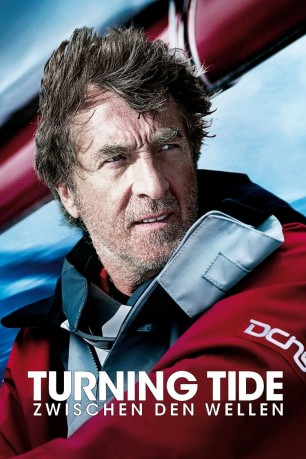
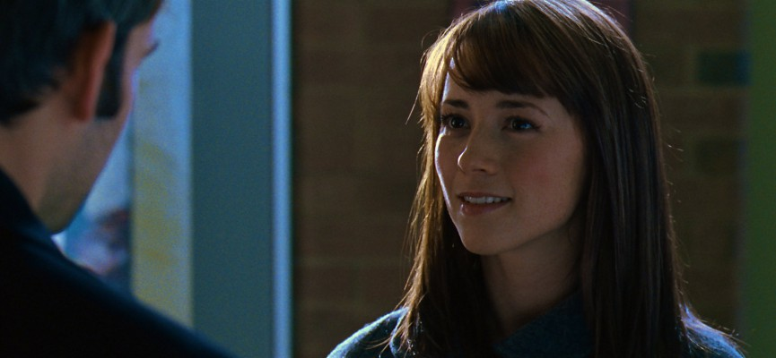
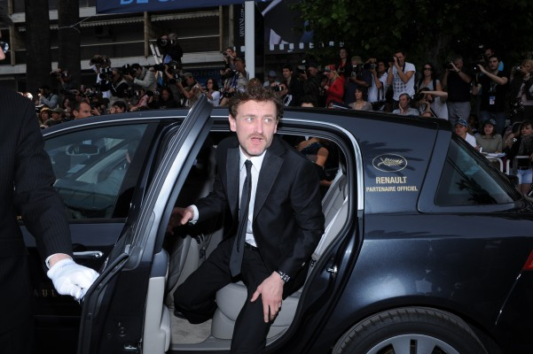

#10058 Turning Tide - Zwischen den Wellen
 
 IMDB-Wertung: 6.4 / 10
IMDB-Wertung: 6.4 / 10  Metascore: 0
Metascore: 0 
Yann Kermadec sieht sich schon am Ziel seiner Träume, als er in letzter Minute als Ersatz für seinen Freund Franck Drevil bei einem Segelbootrennen rund um den Globus an den Start geht. Yann hat einen starken Siegeswillen, doch dann macht er an Bord seines Bootes eine Entdeckung, die das gesamte Rennen in Frage stellen könnte.
Jahr: 2013
Dauer: 101 Minuten
FSK: 12
Land: Frankreich Studio: Senator FilmTonspuren:
Untertitel: Deutsch,
Auflösung: 1080p (1920x816) Größe: 9256 MB
Genre: Drama, Abenteuer, Sport
Regisseur: Christophe Offenstein
Drehbuch: Jean Cottin, Christophe Offenstein, Frédéric Petitjean, Pierre Marcel, Marc Guilbert
Soundtrack: Patrice Renson, Víctor Reyes
Darsteller:
 François Cluzet als Yann Kermadec
François Cluzet als Yann Kermadec Virginie Efira als Marie Drevil
Virginie Efira als Marie Drevil Guillaume Canet als Frank Drevil
Guillaume Canet als Frank Drevil-  Karine Vanasse als Mag Embling
 Arly Jover als Anna Bruckner
Arly Jover als Anna Bruckner- Jose Coronado als José Monzon
-  Jean-Paul Rouve als Denis Juhel
- Guillaume Nicloux als Le directeur de la course
- Emmanuelle Bercot als Médecin de la course
- Léa Fazer als Mère école
- Samy Seghir als Mano Ixa
- Dana Prigent als Léa Kermadec
- François Jerosme als Animateur PC Course
- Philippe Lefebvre als Raphaël Keriou
- Lucas Bonnifait als Logisticien Team DCNS
- Laure Duthilleul als La maîtresse d'école
- Stéphan Guérin-Tillié als
- Steve Suissa als
Datei: X:\2013(N-Z)\Turning Tide - Zwischen den Wellen (2013, FSK12, 1920x816).mkv seit 22.11.2018
Festplatte: HD 2013(I-Z)-2014(A-Z)
 Es gibt insgesamt 133 Filme in der Gruppe '2013(N-Z)'
Es gibt insgesamt 133 Filme in der Gruppe '2013(N-Z)'